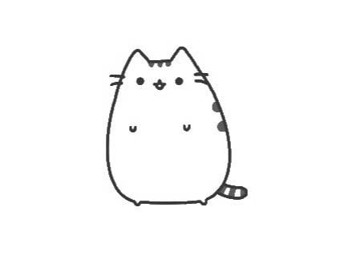
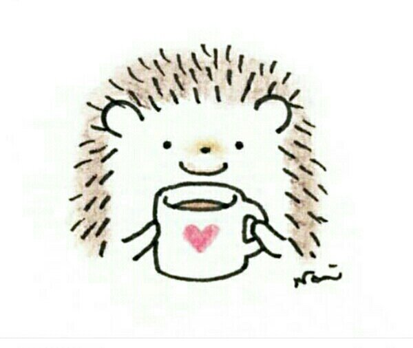
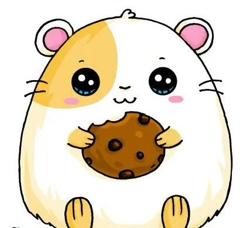

Ну самый важный заголовок
А тут какой-то очень важный текст, может даже много текста и картинки
Вообще, все так сложно, что хочется погладить котика.
Sad cat

Как же тяжело идет освоение нового материала.
Особенно ночью.
Особенно, когда хочется спать.
Надо срочно выпить кофе
Coffee

Уже так много времени, а еще не сделан сайт. Пойду и сожру печеньку.
Вообще, кушать ночью печеньки - это прямо по-хомячьи.
Поэтому я - хомяк с печенькой
The hamster with a cookie
Фсё! Бегом на вторую страницу!!!